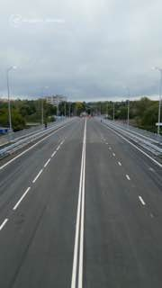

01
Общество и городская среда · событие дня
✅ Мост позволит существенно сэкономить время в пути, разгрузит основные магистрали центра города, Засвияжья и Минаевский мост, который
Также новый объект обеспечит условия для развития жилых микрорайонов. Поставил задачу администрации города совместно с Минтрансом проработать запуск общественного транспорта через переправу. ✅ Поблагодарил наших мостостроителей. Сейчас все основные строительно-монтажные работы завершены.…